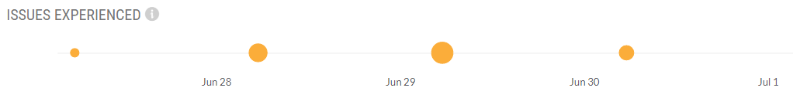

Service Monitoring
The Service Monitoring page provides a detailed view of the following:
Insights about the performance of API-enabled Protection app instances of the customers' tenant. It gives an in-depth visibility of the overall performance of the API-enabled Protection service.
Identify, understand, and guide customers to resolve specific issues with respect to their tenants.
Service monitoring provides three major information:
Scan Time: Scan time is the time taken by API-enabled Protection to scan an object. 95% of the objects are scanned in under the 95 th percentile time. In addition, the 50th percentile time works similarly and is known as the median.
Issues: Issues include tenant-related issues for each app instances in API-enabled Protection. Netskope posts issues about the service as they are discovered. These issues, if not fixed, could have an impact on the performance of the service. Most issues are identified and automatically resolved wherever possible. For issues that require user intervention, are highlighted and the respective suggested actions are displayed to resolve the same.
Object Scanned: Object scanned is the count of objects scanned by API-enabled Protection. Objects can be files, folders, chat messages, emails, attachments, and more. It compares the objects that were successfully scanned each day to those that result in errors.
To access the Service Monitoring page, go to Settings > General. On the top right of the General page, click View Service Monitoring. This page displays the following information:
Performance Summary: This section displays several key metrics about the performance of the service. It includes:
Total Objects Scanned: Total number of objects scanned by API-enabled Protection. This does not include pending objects.
Total Bytes Scanned: Total number of bytes scanned across configured apps by API-enabled Protection.
Scan Time (50 th Percentile): 50% of the objects have a better (lesser) scan time than this.
Scan Time (95 th Percentile): 95% of the objects have a better (lesser) scan time than this.
Error Rate: Objects that encountered errors while scanning. This number is displayed in percentage.

Objects Scanned: This section displays the count of objects that were scanned over a period of time. It compares the objects that were successfully scanned each day to those that resulted in errors.

Scan Time: This section displays the time taken by API-enabled Protection to scan an object. 95% of the objects are scanned in under the 95 th percentile time. In addition, the 50 th percentile time works similarly and is known as the median.

Issues Experienced: This section displays tenant-related issues for each app instance in API-enabled Protection. Netskope posts issues about the service as they are discovered. These issues, if not fixed, could have an impact on the performance of the service. Most issues are identified and automatically resolved wherever possible. For issues that require user intervention, are highlighted and the respective suggested actions are displayed to resolve the same. The graph displays the issue occurrence rate over a period of time. Hovering the mouse on a dot displays the issue occurrence count per app.
 Recent Objects: This section displays a chronological list of the last 100 scanned objects across app instances. You can view the list based on different statuses; All, With Errors, Scanned Successfully, and Pending. Also, you can sort the list by identified (object scanned and identified by API-enabled Protection) or scanned (object scanned by API-enabled Protection, pending identification) time and date.

You can filter statistics for the last 24 hours, 7 days, or 30 days.

App-Specific Service Monitoring
You can select an app instance to get specific information about the app. On the top-right of the Service Monitoring page, select an app instance from the Go to: dropdown list:

The page displays the following information:
Instance Summary: This section displays several key metrics about the performance of the app instance. It includes:
Status: The current functioning state of the app. It displays if the app is Up or Down.
Objects Scanned: Total number of app-specific objects scanned by API-enabled Protection. This does not include pending objects.
Bytes Scanned: Total number of app-specific bytes scanned by API-enabled Protection.
Pending: Total number of app-specific objects that are yet to be scanned.
With Errors: Total number of app-specific objects that encountered errors while scanning.
Open Issues: Total number of open issues specific to an app. Netskope posts issues about the service as they are discovered. These issues, if not fixed, could have an impact on the performance of the service. Most issues are identified and automatically resolved wherever possible. For issues that require user intervention, are highlighted and the respective suggested actions are displayed to resolve the same.
Administrator: The username of the administrator account of the app.

Objects Scanned: This section displays the count of objects that were scanned over a period of time. It compares the objects that were successfully scanned each day to those that resulted in errors.
Scan Time: This section displays the time taken by API-enabled Protection to scan an object. 95% of the objects are scanned in under the 95 th percentile time. In additional, the 50th percentile time works similarly and is known as the median.
Scan Time (Distribution): This section displays the time taken by API-enabled Protection to scan an object. Data points are displayed along a geometric scale.

Recent Objects: This section displays a chronological list of the last 100 scanned objects across app instances. You can view the list based on different statuses; All, With Errors, Scanned Successfully, and Pending. Also, you can sort the list by identified (object scanned and identified by API-enabled Protection) or scanned (object scanned by API-enabled Protection, pending identification) time and date.

Issues: This section displays a list of open and resolved issues of an app. To see the resolved issues, select the Show resolved issues checkbox under the Issues tab. For open issues, you can take an appropriate action. Possible actions are:
Settings: This action navigates you to the app instance setup page where the issue occurred. Review the app instance configuration and correct the issue(s), if any.
Legal hold profile: This action takes you to the Policies > Profiles > Legal Hold page. User mentioned in the profile may not have rights to perform any legal hold operation. Review the user for whom the profile is created.
Quarantine profile: This action takes you to the Policies > Profiles> Quarantine page. User mentioned in the profile may not have rights to perform any quarantine operation. Review the user for whom the profile is created.
Re-grant: This action takes you to the app instance setup page. Click the Grant Access link to re-grant access to the account.

You can search an issue by keyword or ID. Every issue has a corresponding ID. The following table explains the various IDs:
ID / Severity
Description
Action
User Intervention
ID_101 / High
Admin user not found
Settings
Yes
ID_102 / High
User not admin
Settings
Yes
ID_201 / Low
Legal hold profile user not found
Legal hold profile
Yes
ID_202 / Low
Legal hold profile user not valid
Legal hold profile
Yes
ID_203 / Low
Quarantine profile user not found
Quarantine profile
Yes
ID_204 / Low
Quarantine profile user not valid
Quarantine profile
Yes
ID_303 / Low
Rate limit exceeded
Settings
No
ID_401 / High
Access token expired
Re-grant
Yes
ID_402 / High
Access token invalid
Settings
Yes
ID_403 / High
Application is no more valid
Settings
Yes
ID_404 / High
Refresh token expired
Re-grant
Yes
ID_405 / High
Refresh token invalid
Settings
Yes
ID_406 / High
Application is invalid (refresh token)
Settings
Yes
ID_501 / High
Application URL is unreachable
Settings
Yes
ID_601 / High
Missing scope
Re-grant
Yes
To get back to the main Service Monitoring page, click the Service Monitoring breadcrumb at the top-left of the service monitoring app instance page.

Monitor System Status
The Netskope UI allows you to receive email about updates.
To subscribe to update emails:
On the Service Monitoring page, scroll down to the bottom of this page.
To receive emails about services changes, click subscribe.
Enter your email address and click Save.